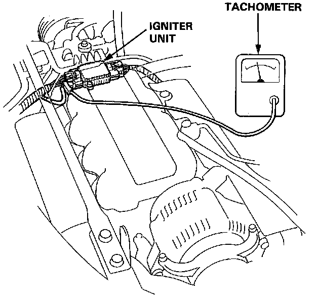
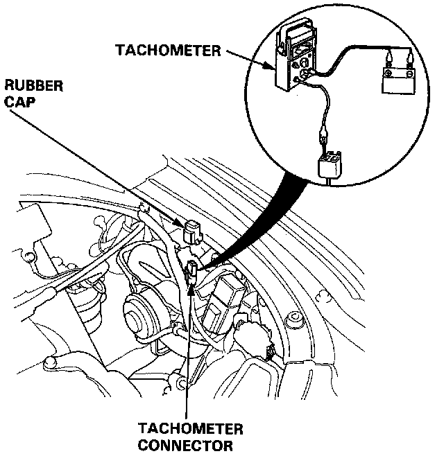
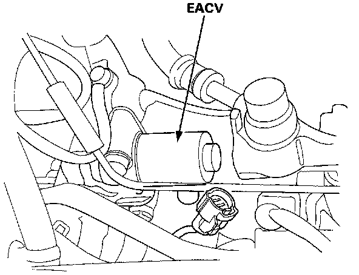
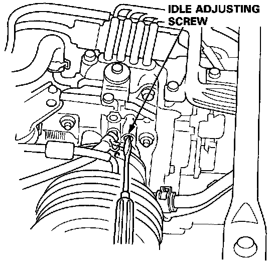

Idle Speed: Testing and Inspection
Idle Speed Inspection/Adjustment1. Start the engine and warm it up to normal operating temperature (the cooling fan comes on).
2. Connect a tachometer.

- Connect a tachometer to loop of igniter unit secondary, or...

- Remove the rubber cap from the tachometer connector and connect a tachometer.

3. Disconnect the 2P connector from the EACV.
4. Start the engine with the accelerator pedal slightly depressed, then turn the headlights and rear defogger ON. After the Check Engine light comes on, stabilize the rpm at 1000, then slowly release the pedal until the engine idles.
- If the engine stalls, turn the idle adjusting screw one turn counterclockwise and recheck.
5. Check idling with the headlights and rear defogger on.
Idle speed should be:
Manual: 550 ± 50 rpm
Automatic: 550 ± 50 rpm (in [N] or [P])

- Adjust the idle speed, if necessary, by turning the idle adjusting screw.
- If the proper idle speed cannot be achieved, clean the throttle body port with carburetor cleaner.
6. Turn the ignition switch OFF.
7. Reconnect the 2P connector on the EACV, then remove CLOCK fuse in the under-hood fuse/relay box for 10 seconds to reset ECU.
8. Restart and idle the engine with no-load conditions in which the headlights, blower fan, rear defogger, cooling fan, and air conditioner are not operating for one minute, then check the idle speed.
Idle speed should be:
Manual: 800 ± 50 rpm
Automatic: 750 ± 50 rpm (in gear)
Idle Control System
1. If the idle speed is out of specification and the Check Engine light does not blink CODE 14, check the following items:
- Adjust the idle speed
- Air conditioning signal
- Alternator FR signal
- A/T shift position signal
- M/T neutral switch signal
- M/T clutch switch signal
- Starter switch signal
- Fast idle valve
- Hoses and connections
- EACV and its mounting 0-rings
2. If the above items are normal, substitute a known-good EACV and readjust the idle speed.
- If the idle speed still cannot be adjusted to specification (and the Check Engine light does not blink CODE 14) after EACV replacement, substitute a known-good ECU and recheck. If symptom goes away, replace the original ECU